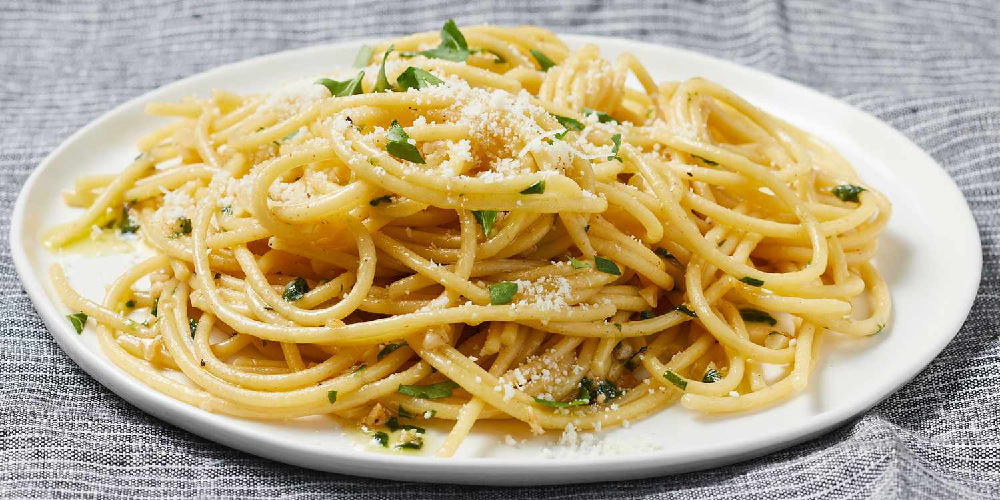

Dry Spaghetti

Dry Spaghetti is a stable dish in my household. It is a solid meal option for both single people and families alike.
- Gather ingredients:
- Add ground beef to skillet on medium.
- Add another boiling pot of water for the noodles.
- Chop ground beef with spatula
- Cook ground beef until brown.
- Drain grease from ground beef.
- Add salt and minced garlic to taste.
- Add butter to mixture and cook an additional 10 minutes
- When water from pot 2 comes to a boil add angel hair noodles.
- Stirring regulary. Cook 5 minutes
- Combine ingredients and noodles.
- Plate meal and add parmesan for additional flavor.
- Enjoy!